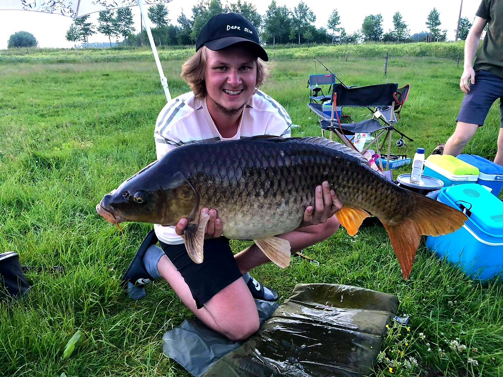

Kreken en hengelsport
Het meest kenmerkende element van de streek zijn de kreken. Een kreek is een kleine watergeul die ontstaat als gevolg van een dijkdoorbraak, of is een restant van een ingedijkte vroegere getijdengeul. Sint margriete heeft in totaal vijf kreken de Molenkreek, de Roeselarekreek en de Hollandersgatkreek, en verder het Nieuw Haantjesgat en De Val. Deze kreken trekken toch een behoorlijk aantal toeristen. Het is de uitgelezen streek om te wandelen of te fietsen. Als mensen Sint-Margriete willen verkennen kunnen ze gebruik maken van de knooppunten. Dit zijn wandel en fiets routes die uitgestippeld zijn. Deze knooppunten brengen je langs de mooiste plekken van Sint-Margriete.
Deze prachtige kreken zijn niet alleen mooi om te bezichtigen maar ook voor de hengelsportliefhebber is dit een prachtige plaats. In Sint-margriete zijn er prachtige plaatsen waar gevist kan worden. De kreken van Sint-Margriete hebben een zeer rijk visbestand. Een gedetaileerde lijst van alle soorten kunt u hieronder vinden.
| Alver | Baars | Barbeel | Beekforel | Blankvoorn |
|---|---|---|---|---|
| Bot | Brasem | Europese meerval | Giebel | Harder |
| Haring | Kabeljauw | Karper | Kolblei | Kopvoorn |
| Kroeskarper | paling | Pos | Rietvoorn | Riviergondel |
| Roofblei | Serpelling | Sneep | Snoek | Snoekbaar |
| Tong | Wijting | Winde | Zeebaars | Zeelt |
